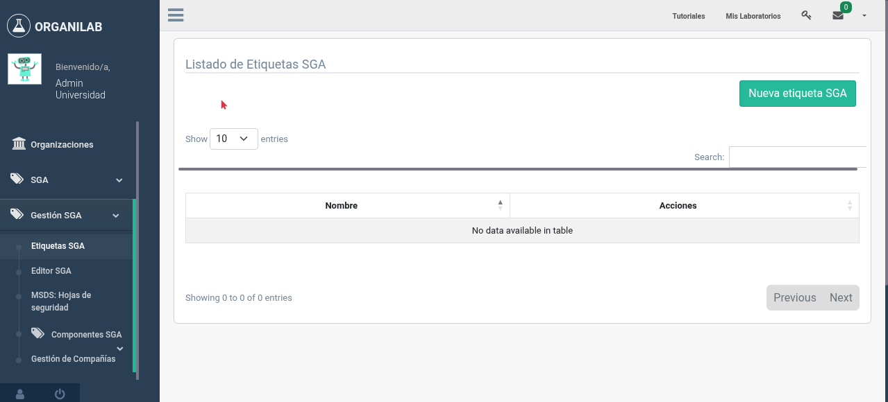

3. Etiquetado
El etiquetado conforme al SGA es un requisito fundamental para la comunicación de peligros químicos. Organilab permite generar etiquetas que cumplen con el estándar internacional, incluyendo pictogramas, palabras de advertencia, indicaciones de peligro y consejos de prudencia.
Pictogramas de Peligro SGA
Los pictogramas son símbolos gráficos que comunican de forma visual el tipo de peligro de una sustancia. El SGA define nueve pictogramas estándar, cada uno representado dentro de un rombo con borde rojo:
| Pictograma | Nombre | Peligros que representa |
|---|---|---|
| Llama | Inflamables, piroforos, autocalentamiento, emisores de gases inflamables | |
| Llama sobre círculo | Comburentes (oxidantes) | |
| Bomba explotando | Explosivos, sustancias autorreactivas, peróxidos orgánicos | |
| Corrosión | Corrosivos para metales, piel u ojos | |
| Calavera y tibias | Toxicidad aguda (mortal o tóxico) | |
| Signo de exclamación | Irritación, sensibilización cutánea, toxicidad aguda leve, narcóticos | |
| Peligro para la salud | Carcinógeno, mutágeno, tóxico reproductivo, sensibilizante respiratorio | |
| Medio ambiente | Peligroso para el medio ambiente acuático | |
| Cilindro de gas | Gases a presión |
Palabras de Advertencia
El SGA define dos palabras de advertencia que indican el nivel de gravedad del peligro. Cada indicación de peligro (código H) tiene asignada una de estas palabras:
Elementos de una Etiqueta SGA
Una etiqueta conforme al SGA debe contener los siguientes elementos obligatorios. El diagrama muestra la disposición típica de estos elementos:
Disposición de los elementos obligatorios en una etiqueta SGA
Generar Etiquetas en Organilab
Organilab incluye un sistema de plantillas de etiquetas SGA (TemplateSGA) que permite generar etiquetas conformes al estándar directamente desde el sistema. El proceso es el siguiente:
- Acceda al módulo SGA desde el menú principal de la organización.
- Seleccione la sustancia para la cual desea generar la etiqueta.
- Verifique que la sustancia tenga registrados sus códigos H, pictogramas y palabra de advertencia.
- Seleccione la opción Generar etiqueta desde la vista de detalle de la sustancia.
- Elija una plantilla de etiqueta (TemplateSGA) del catálogo disponible o cree una personalizada.
- Configure las dimensiones y formato de la etiqueta según sus necesidades.
- Revise la vista previa de la etiqueta generada.
- Descargue o imprima la etiqueta en el formato deseado (PDF).

Interfaz de generación de etiquetas SGA en el módulo de sustancias
Elementos Requeridos en la Etiqueta
Según el SGA, toda etiqueta de producto químico debe incluir los siguientes seis elementos:
| Elemento | Descripción | Origen en Organilab |
|---|---|---|
| Identificación del producto | Nombre químico o comercial del producto | Campo nombre de la Sustancia o del Objeto |
| Pictogramas de peligro | Símbolos gráficos en rombo rojo | Derivados de los códigos H y clases de peligro |
| Palabra de advertencia | "Peligro" o "Advertencia" | Asociada a cada código H (WarningWord) |
| Indicaciones de peligro | Frases H que describen los peligros | DangerIndication asociadas a la sustancia |
| Consejos de prudencia | Frases P con medidas preventivas | PrudenceAdvice vinculados a cada código H |
| Información del proveedor | Nombre, dirección, teléfono | Datos del proveedor en el registro de la sustancia |
Vista previa de una etiqueta SGA generada con pictogramas y frases de peligro